Free rhythm game for Windows
Play osu! maps in 3D. Six modes, one rhythm game.
OMEN plays osu!mania 4K maps in 3D worlds or on the classic 2D field with your osu! skins, and adds five modes of its own: Orbit, Rally, Dirigent, Trace and Rebound.
One installer with the game, 13 worlds and sample maps. No osu! needed. Updates install themselves.
Six rhythm game modes
Every mode plays regular osu! maps and has its own star rating, scores, leaderboards, replays, tutorial and multiplayer. Trace and Rebound play osu!mania 4K maps.
-
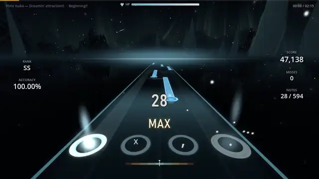
01Mania
osu!mania 4K in 3D worlds or on the classic 2D field. The 4K VSRG you know, with pp and star rating.
Watch with sound -
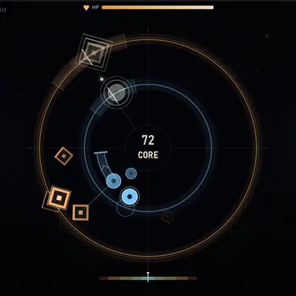
02Orbit
Aim at targets, count the satellite laps, hit on the beat. Plays osu!standard and 4K maps.
Watch with sound -
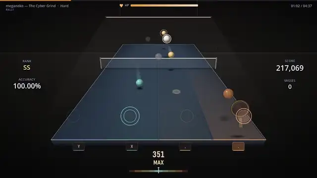
03Rally
Table tennis to the beat. Every note is a ball that reaches your racket at the note time.
Watch with sound -
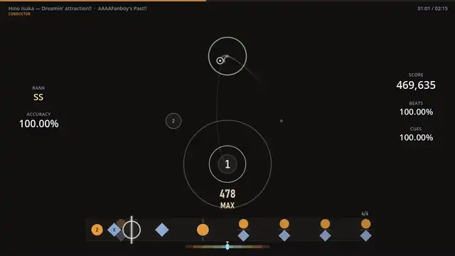
04Dirigent
Conduct the beat with the cursor and play the cues of the map with two keys.
Watch with sound -
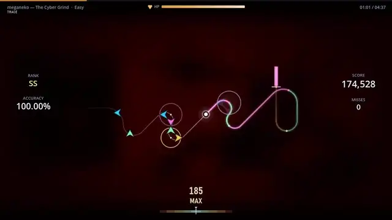
05Trace
A thread draws the map as you play it. Every note is a bend in the direction of its column.
Watch with sound -
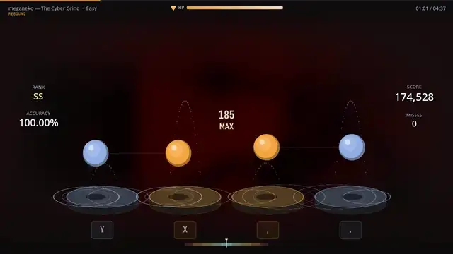
06Rebound
Four balls bounce on four drums and land exactly on your notes.
Watch with sound
What is in the game
A free 4K rhythm game for Windows PC that works with the maps and skins you already have.
- Plays osu! mapsImport
.oszfiles or a whole osu!Songsfolder, or search and download ranked maps in the game. - 3D worlds or classic 2D13 worlds that move with the music, or the 2D field with scroll speed 1 to 40, Hidden, Fade-In and Cover.
- osu! skinsImport your skins as
.oskfor the 2D field, or use one of 3 built-in skins in your own note colours. - SV mod for any mapScroll changes written from the map's own beat grid. Notes still arrive exactly on time.
- Multiplayer and tournamentsRooms by code in all six modes: free, teams, battle royale, picks and bans.
- Replays and resultsJudgements, UR, early/late, hit error and accuracy over time. Replays and video clips.
- Online account, optionalLeaderboards, web profiles and chat. Without an account everything works offline.
- Your own musicDrop an
.mp3,.oggor.wavand play it as an Orbit map.
Screenshots
Mania in 3D, the song browser and the result screen all six modes share.
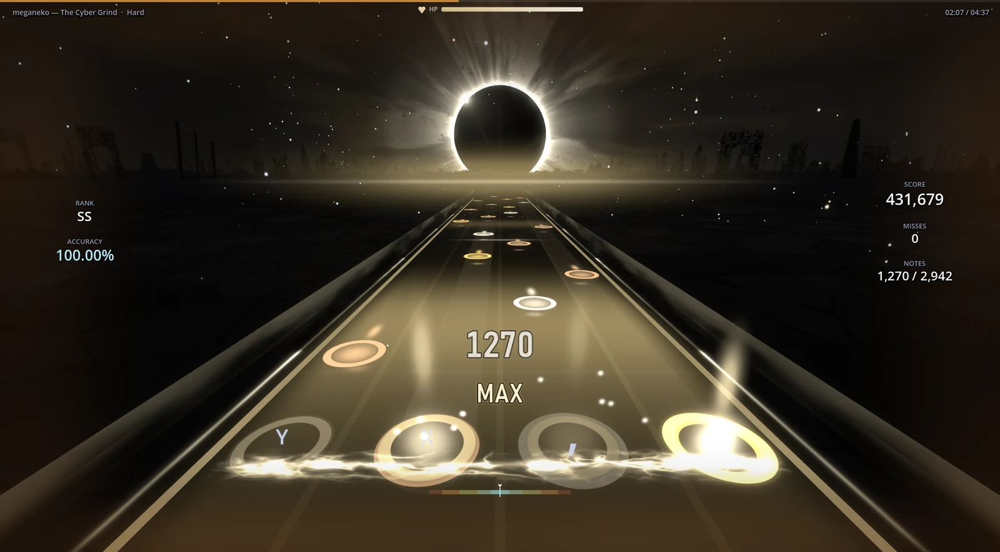
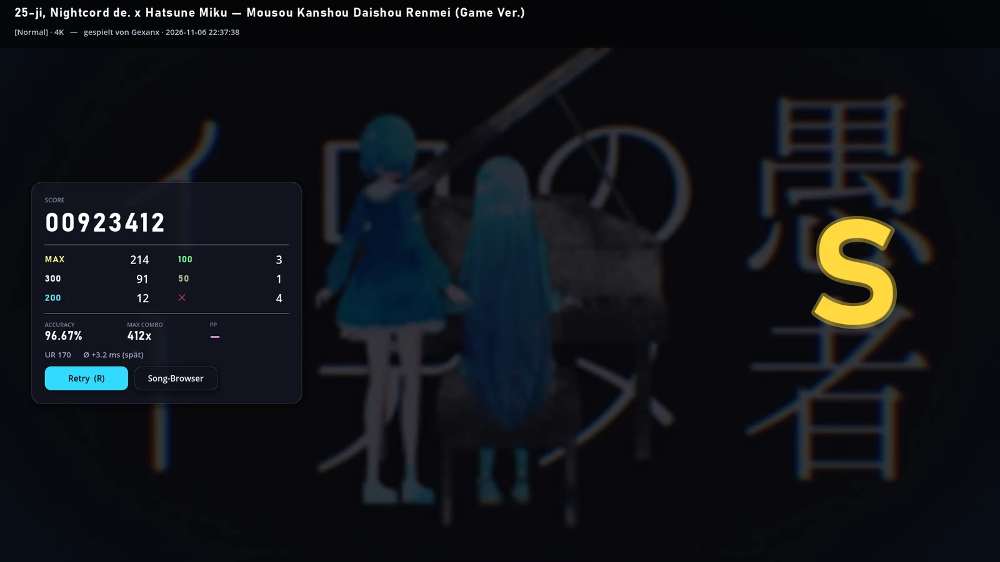
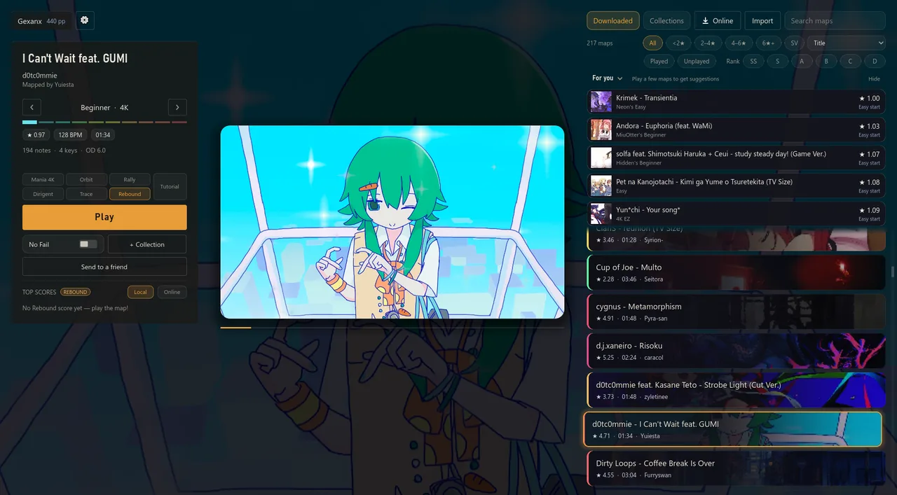
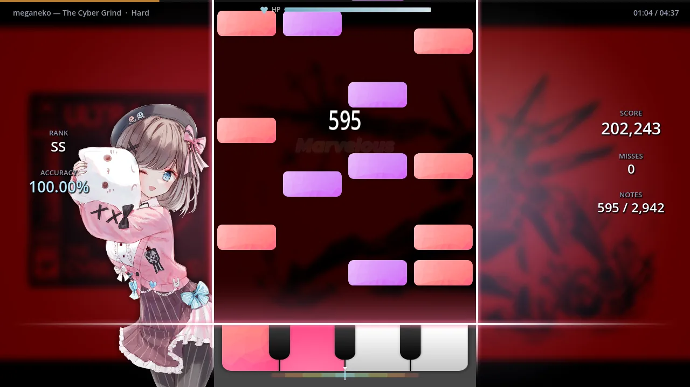
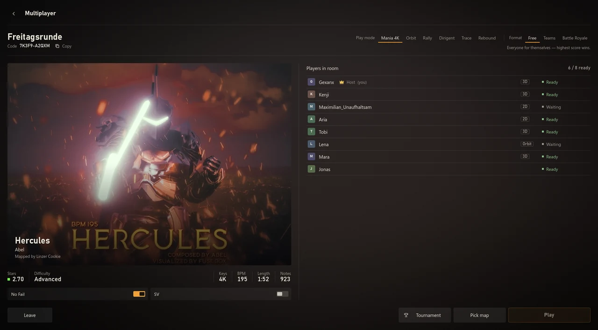
How to install OMEN
Windows only. The installer is not code-signed, so Windows asks once.
- Download OMEN_Setup.exe (about 430 MB).
- Run it. If Windows shows "Windows protected your PC", click More info, then Run anyway.
- Start OMEN from the desktop or the start menu. New versions install themselves.
FAQ
Short answers. The README on GitHub explains every mode in detail.
- Is OMEN free?
- Yes. The download is free, and the online account is optional.
- Do I need osu! to play OMEN?
- No. OMEN is a game of its own. It plays
.oszfiles and downloads maps in the game. - Can I use my osu! maps?
- Yes. Import
.oszfiles or a whole osu!Songsfolder. 4K osu!mania maps and osu!standard maps are supported. - Can I use my osu! skins?
- Yes, in the 2D field. Import your osu! skins as
.osk, or use one of the 3 built-in skins. - Does OMEN run on Mac or Linux?
- Windows only for now.